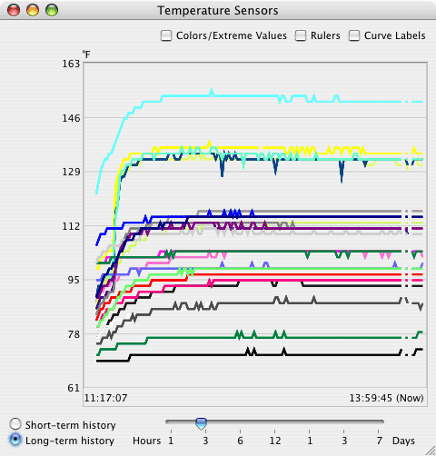
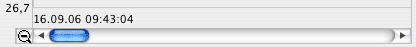
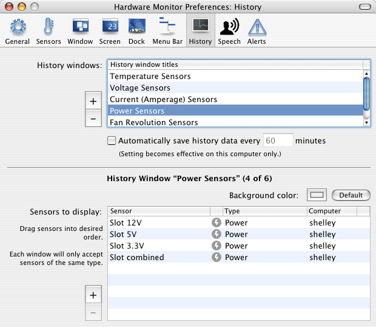

Displaying history data |
The monitor application contains a powerful history feature that allows to track the development of readings for an extended period of time and to visualize the data graphically. History data can be displayed in two different modes of operation:
The readings can be displayed in one or an unlimited number of windows as in the following example.

A curve is displayed with an interruption if no values have been recorded in the affected time range. The monitor program was not running or the computer was switched off.
Using the buttons in the lower left corner, you can choose between the two history modes. If the long-term history is selected, you can set the desired time interval with the slider. Time is visualized from left to right with the current readings display at the right border.
When the selected time interval is so large that it can no longer be displayed with full resolution in the current window width, the application allows you to scroll horizontally over the entire set of values. A magnifying glass with a - symbol will appear in this case (see below). If you click on this icon, the history will zoom out the time axis so that it fits completely into the window, and the symbol will turn into a + sign. Note that isolated areas of the scaled down curves (in case of major gaps in the history data) may become so small that they are no longer visible. To return to full resolution again, press the + symbol.

When the checkmark Colors/Extreme Values is set, a drawer opens at the side of the window, displaying a legend which sensor is marked by which color. The table in the drawer also displays the extreme values of the sensors for the selected time interval, which is explained in detail in a different section of the reference manual. Color settings can be modified right here, by clicking onto one of the colors in the table, or via the preferences window.
Setting the checkmark Rulers will bring up two rulers that act as a crosshair. It can be used to determine the exact values of each curve point. The values for time and reading are shown next to the crosshair center.
The switch Curve Labels allows to show a small identification label next to each curve. The labels will use the short sensor names you have defined in the preferences window.
To open all configured history windows select the menu item Window > Show History Windows or press ⌘+⇧+H. You can also use this item if you have closed several (but not necessarily all) history windows and want to make sure that all are reopened. To close all history windows at the same time, select Window > Hide History Windows or press ⌘+⌥+W.
You can define an arbitrary number of history windows. The number is only limited by the memory size of your computer. History windows and the individual sensors that should be displayed in them can be configured with the History pane in the preferences window.

To create a new history window, press the button + left to the upper table. A new table entry will be displayed, and after clicking it you can change the title of the new window as desired. To delete one or multiple windows, select the respective entries in the table and press the button labeled -.
If a window is selected, you can add or remove sensors in the lower half of the window in the same way discussed earlier. Note that a single history window can only contain sensors of the same quantity type. Otherwise, it would not be possible to label the vertical axis in a clean way. This means it is not possible to have a temperature sensor and a battery capacity sensor in the same history window. The background color for each window can be set with the small color well above the sensor table.
It is no problem to display a single sensor in multiple history windows simultaneously. However, you should avoid creating too many history windows on systems without enough computing power. The continuous updates necessary for all graphs may waste computation time which will no longer be available to other applications.
A single history window can only contain sensors of the same quantity type, for example temperature sensors only. This is necessary to make sure the graphs are showing consistent scales and units on their vertical axes. In some cases however, you might want to observe how sensors of different types interacted at a certain point in time. For example, a high processor load causing higher CPU temperatures and higher amperage, causing higher fan speeds.
To monitor a time interval, putting sensors with different quantities into direct relation with each other, you can combine several windows, overlaying their history graphs:
You can remove all overlays from the selected main window by pressing the button Deactive Overlays in the inspector panel. Note that the following restrictions apply to combined history windows:
The history values are automatically saved by the application each time it is quit. However, if your computer is defective and you are using the application to verify if the defect is caused by an over-temperature condition, the history readouts may be lost when the computer crashes before the data could be saved. For this reason you can enable the option to automatically save the data in regular intervals. Set a checkmark at Automatically save history data every x minutes and enter a value between 1 and 1440 minutes (one day). The setting is effective for this computer only, not for remotely monitored computers.
You can clear all values for the short-term history of all sensors by selecting the menu item Monitor > Clear Short-Term History or pressing ⌘+K.
If it happens to be necessary to delete stored values of the long-term history, drag the folder
~/Library/Application Support/Hardware Monitor, or
~/Library/Application Support/Temperature Monitor respectively,
from your private folder to the trash. Note that this will erase all readings for all computers you have used in the past!
The short-time history is cleared automatically when the update interval for readings is changed.